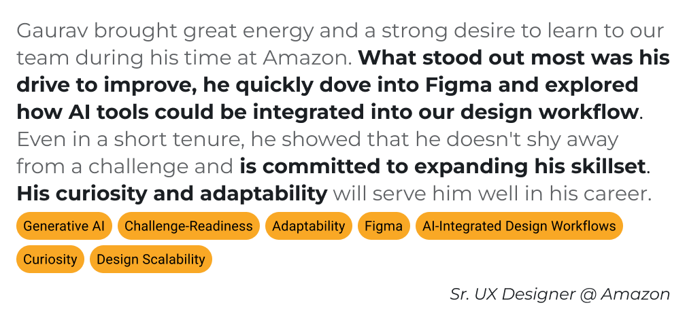

What if a workspace environment amplifies collaboration, inspiration and innovation for its employees? BMW needed to draw employees back post-COVID by making the office more desirable.

The space we created captured what BMW stands for — "The Ultimate Driving Machine" — and in our case, driving Collaboration, Inspiration and Innovation.
The existing BMW workspace failed to foster a productive and engaging environment, leading employees to prefer remote work. This stemmed from three core deficiencies:
I led the research and product development, redesigning the workspace to foster natural collaboration through modular meeting areas and pods, swing-style window seating with natural light, BMW-iconic cafeteria elements, and custom modular furniture. Strategic wayfinding and spatial design encourage spontaneous conversations and idea sharing.